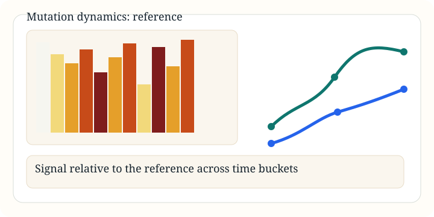

Mutation Dynamics
Dynamics Report: Reference Signal
Interactive reference-mode dynamics report with coding-region heatmaps, temporal region trends, and grouped NSP views.
Buckets
160
Window
14 d
Mode
Reference
- Heatmaps of accumulated signal relative to the reference
- Region-level curves for ORF1ab, S, N, M, and E
- Grouped or individual non-structural protein trend views